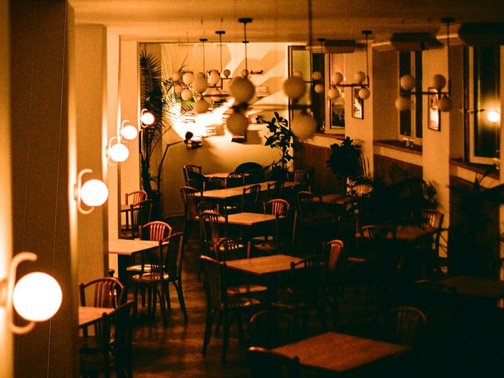
Grupos
Mesas para grupos en la sala principal, con menú cerrado a elegir entre las propuestas de la casa y los tiempos de la cocina a vuestro ritmo.
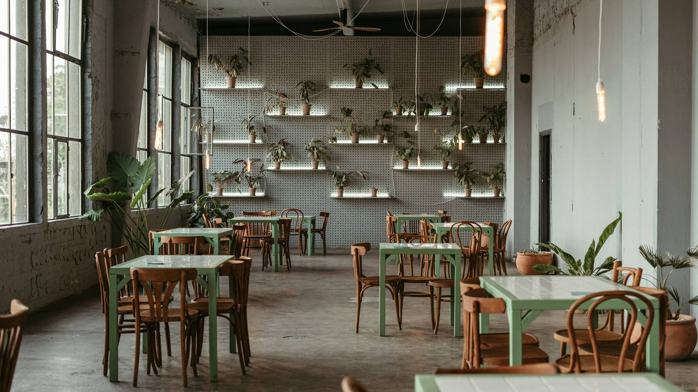
Parrilla de brasa · Majadahonda
Carne madurada, pescado entero y verdura al rescoldo, en una sala en penumbra para cuarenta comensales. La mesa la coge el asistente, a cualquier hora.
La casa
Aquí manda el fuego. La encina se enciende por la mañana y se trabaja hasta que sale el último plato: producto con tiempo, brasa viva y una sala hecha para quedarse a la sobremesa.
01 · Nuestra carta
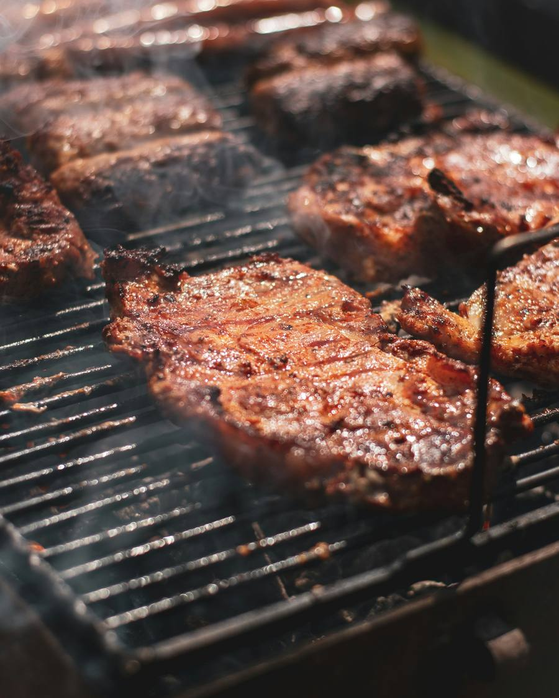
Brasa, temporada y mercado. Chuletón madurado, pescado entero a la parrilla y verdura al rescoldo; la pizarra cambia con lo que llega.
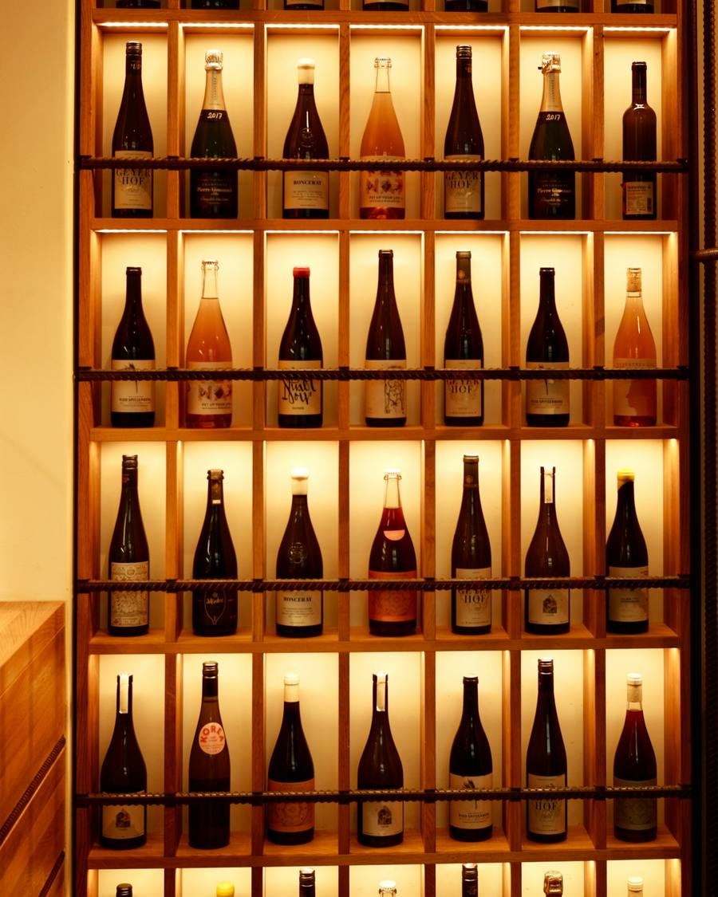
Una pared de botellas pensada para la parrilla: tintos con estructura, blancos con crianza y algún vino de pueblo que merece la pena.
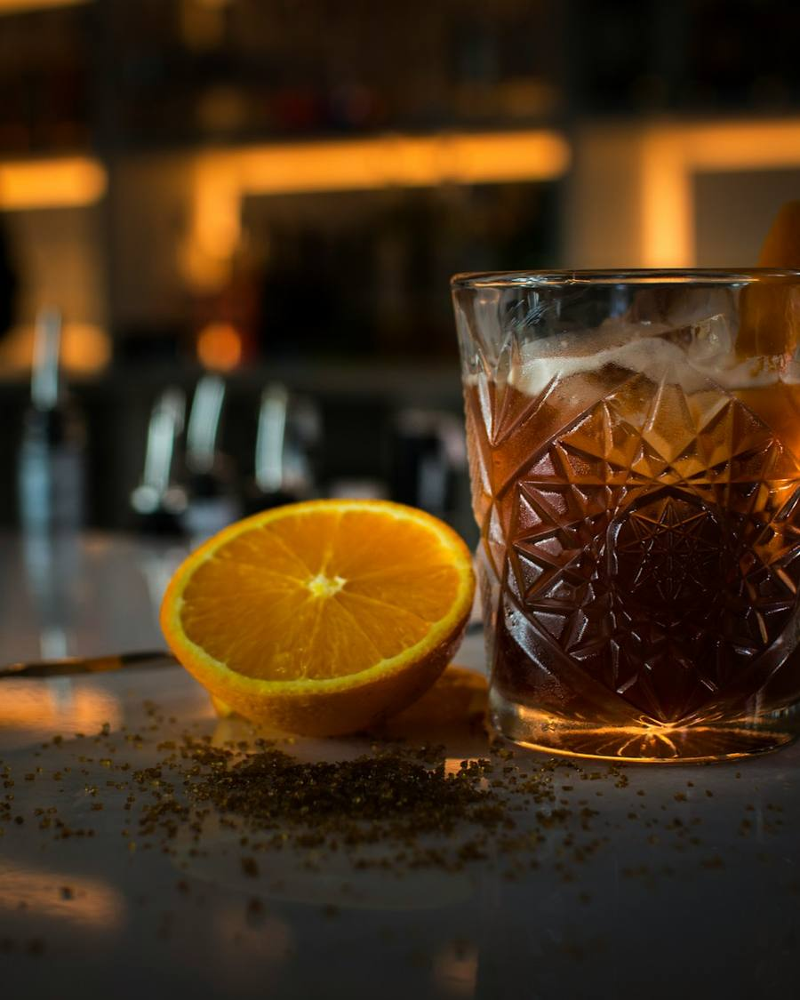
Clásicos bien hechos y alguno de la casa: cítricos, ahumados suaves y vermut antes de pasar a la mesa.
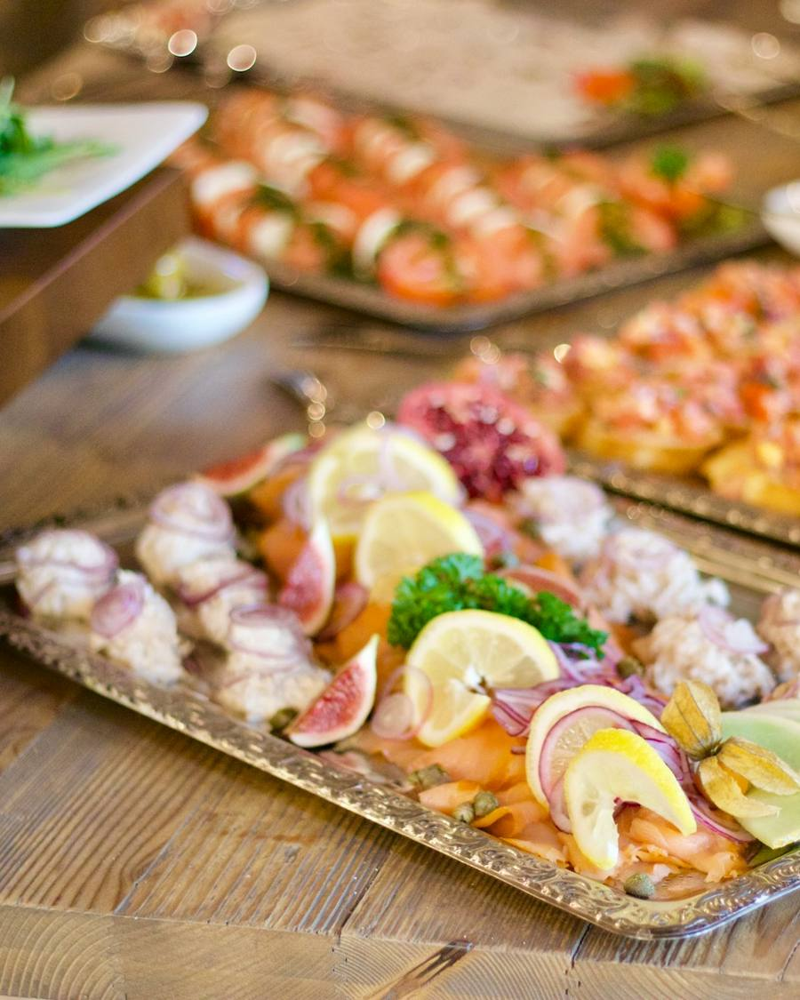
Sábados y domingos a mediodía: pescados curados, panes de masa madre, huevos y fruta. Sin prisa y con café de verdad.
Carta de ejemplo para la demo. Sin precios: en la web real los pone el restaurante.
02 · Grupos y eventos
Comidas de empresa, cumpleaños o una cena que no cabe en cuatro sillas. Cuéntaselo al asistente y el equipo te llama para cerrarlo.

Mesas para grupos en la sala principal, con menú cerrado a elegir entre las propuestas de la casa y los tiempos de la cocina a vuestro ritmo.
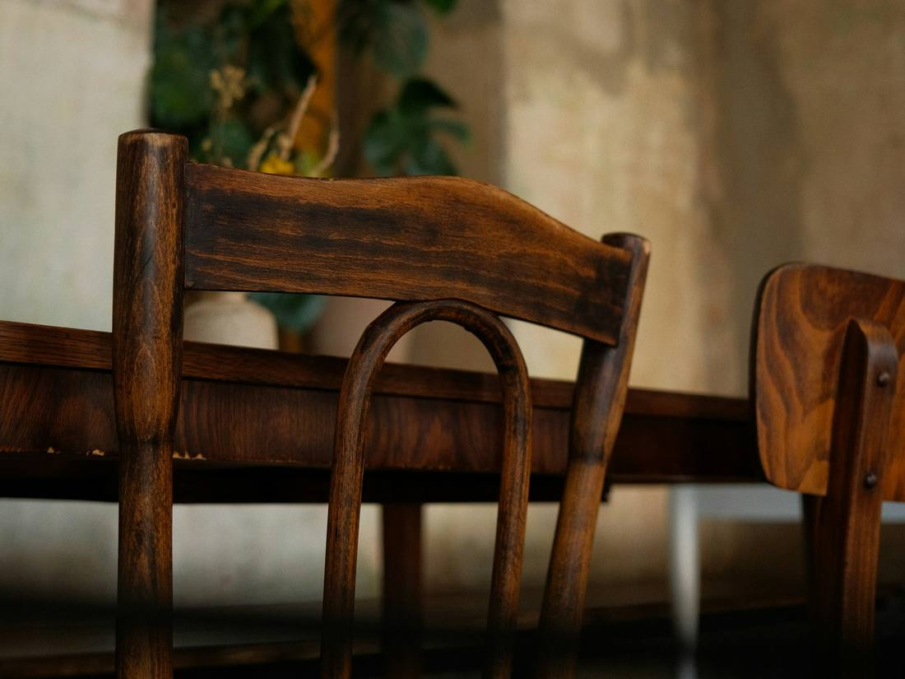
Una sala aparte con mesa larga y servicio propio. Para reuniones que piden intimidad.
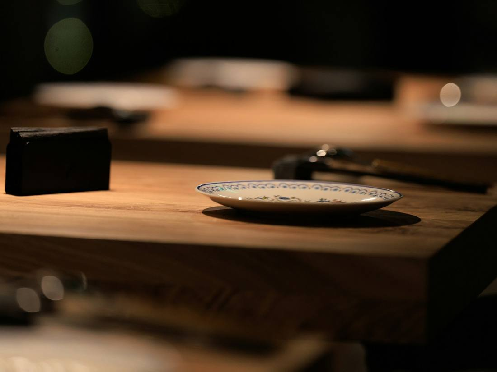
El restaurante entero para vosotros. El menú y el ritmo de la noche se diseñan con el equipo.
03 · Experiencias
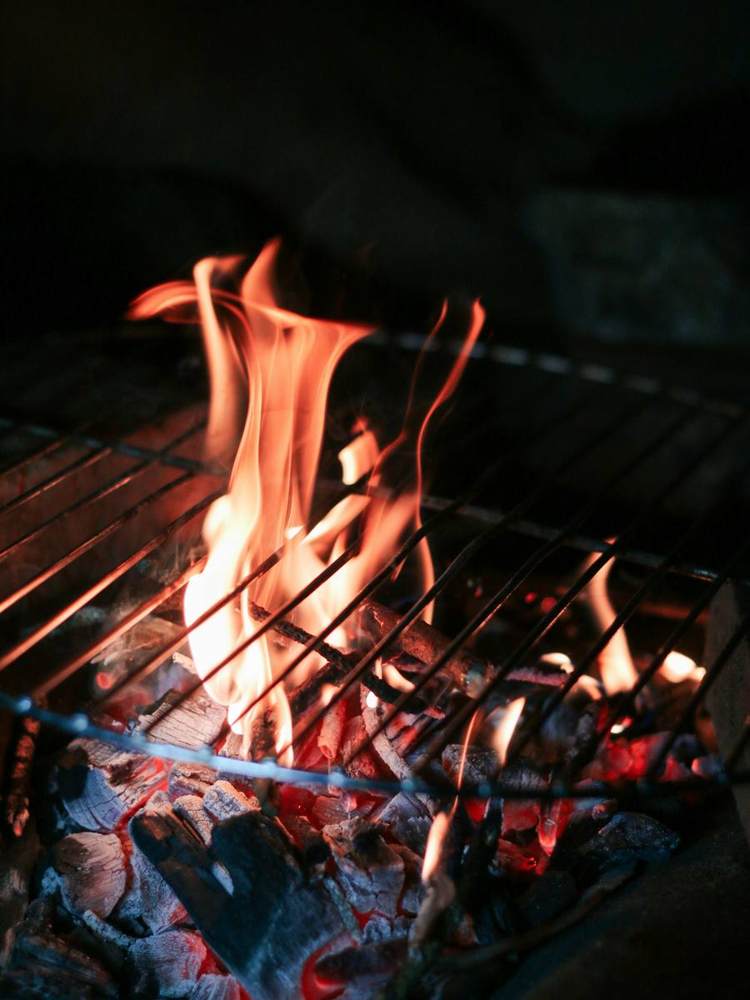
Menú degustación en cinco pases, de la verdura al rescoldo a la carne madurada, terminados al momento.
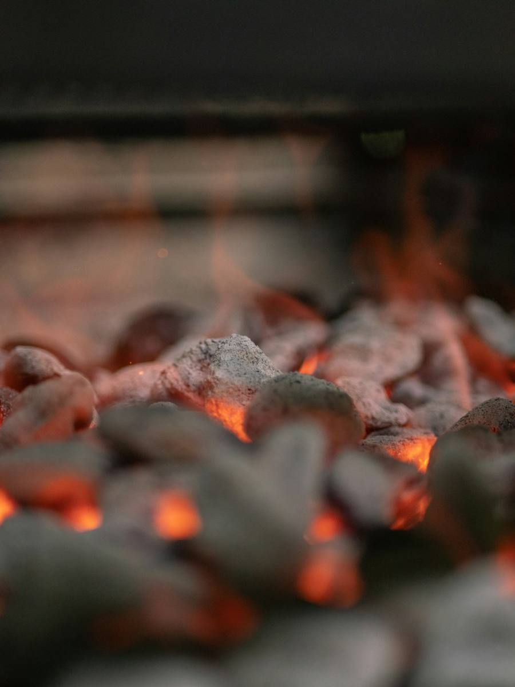
Para compartir en el centro: entrantes de la casa, un corte grande a la piedra y guarniciones de temporada.
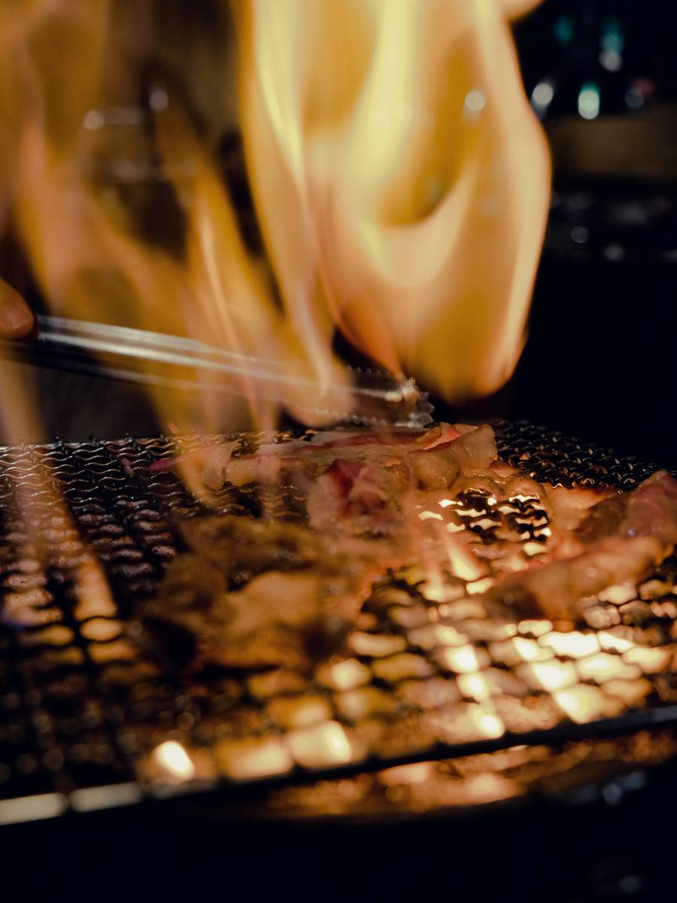
Pases ahumados en frío y en caliente, acompañados de vinos de la bodega. Solo en cenas y con reserva previa.
Menús de ejemplo para la demo. Sin precios.
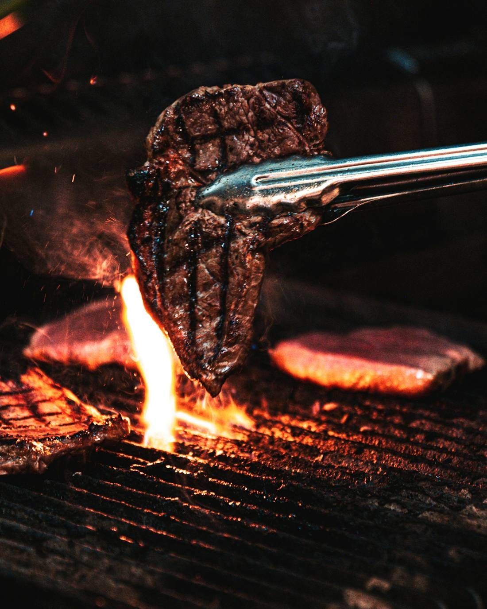
04 · Historia
La casa nació de una idea sencilla: cocinar con encina, comprar cerca y no correr. Pocas elaboraciones, bien hechas, y un fuego que se cuida como a uno más del equipo.
Lo demás acompaña: el pan del obrador de la esquina, el tomate cuando es su tiempo y el vino que pide cada corte. Mantel de tela, sala en penumbra y ruido justo para hablar.
05 · Contacto
¿Reservamos? El asistente pregunta día, turno, zona y personas. Tarda menos que una llamada.
Reservas · Restaurante WhiteMoon
Asistente IA · demo